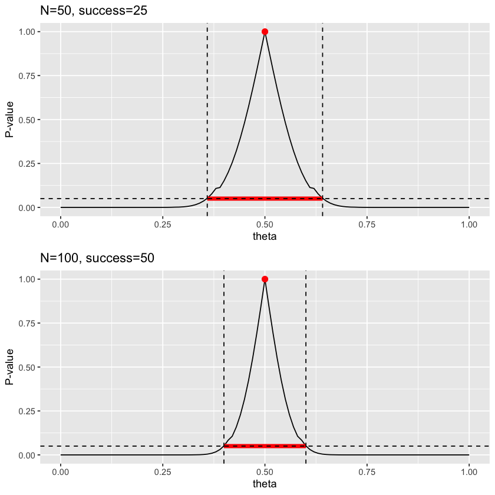

二項検定のP値関数
2025-03-03
2025-03-04
科学における統計手法の誤用は多くの場面で見られ、訂正されずに、今なお普遍的な方法として紹介されている。そのほとんどが統計的仮説検定に基づいた、P値によるカットオフを利用して結論を決定するというものである。また、その代替え案として信頼区間やベイズ推定による手法などが提案されているが、普遍的な方法の置き換えとしては十分といえない（そもそも統計解析において「普遍的な方法」は存在しないことは知っておいたほうが良い）。
そこで、今回はP値を別の定義で考えるCompatibility intervalを考察し、その利点を考察していく。
ネイピア・ピアソン流の統計的仮説検定は、大まかに以下の手順で、事前に決めた有意水準に対して求まったP値が下回るかどうかの真偽で評価を行う。
このロジックは統計的根拠として広く受け入れられ、多くの科学的根拠として報告され、大学レベルの教科書でも普遍的な手法として扱われている。これは、統計的仮説検定が再現性が高く、簡単で、分かりやすい解釈を与えてくれるように見えるからであると思う。
しかし、実際にはかなり複雑な仮定をしており多くの誤用が指摘されている。また、一見簡単に見えるが気をつけて使用しないと研究不正の操作を行ってしまう。加えて、有意差が直接的な根拠となるケースは少なく他の統計量と合わせた総合的な解釈が必要であるというのが現在の通説となりつつある。
そして、教科書には書かれていないが、以下の問題が指摘されている。
上記の理由から、P値を誤解なく扱うには統計的仮説検定での有意水準をカットオフとした方法では難しい。ここで、P値は帰無仮説の元で検定統計量をとる確率であることを考える。
P値は1に近ければ近いほど帰無仮説上での母数がそのデータと仮説において相性が良い(Compatibility)ことを表すので、データと仮説に対して任意の母数とそれに対するP値の組を算出すればどの母数が確率的にCompatibilityであるかが分かる。P値が1である母数は最もデータと仮説に対してCompatibilityである(\(\fallingdotseq\)最大尤度)。また、一定のP値より大きいP値をとる母数の範囲をCompatibility interval(\(\fallingdotseq\)信頼区間)と呼ぶ。
上の関係性をわかりやすく描画したものが母数をx軸、P値をy軸にプロットしたものでP値関数と呼ぶ。
例えば、二項検定を例にしたP値関数は以下の通りである。
二項検定のP値関数
ここでは、試行回数の半分を成功とした場合のデータを仮定した。試行回数が多いほど95%信頼区間は狭い範囲をとるが、最大尤度は試行回数によらず仮定した半分の成功確率であることが分かる。このように、P値関数を用いることでデータと仮説に対して相性が良い、当てはまっている母数の範囲を推定することができる。
ここでの信頼区間とCompatibility intervalの違いは単なる言い換えにほかならないが、P値関数を導入することでデータに対して相性の良い推定量の範囲を論じることができる。すると、信頼区間を考える時に出てくる「不確実性が高い」といった曖昧な記述を避けることができる。
今後、この考え方が科学の基底概念になっていくか分からないが、少なくとも現状の統計的仮説検定よりかは正しい（誤用を産まない）方法であるように思える。いつかその日が来ることを信じて準備しておきたい。